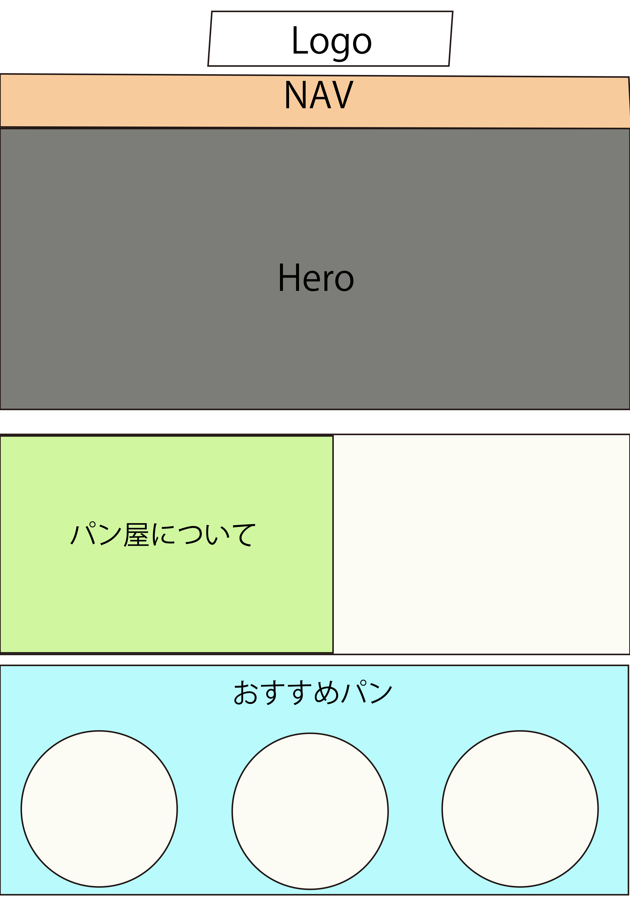
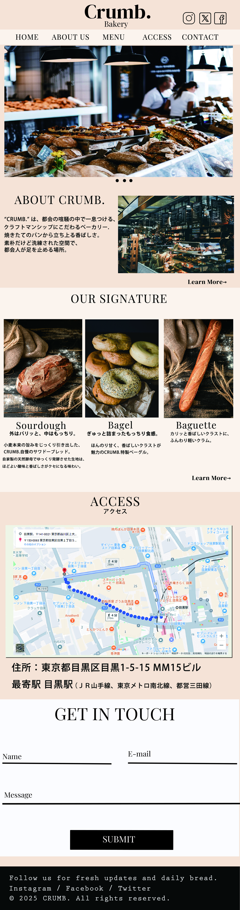
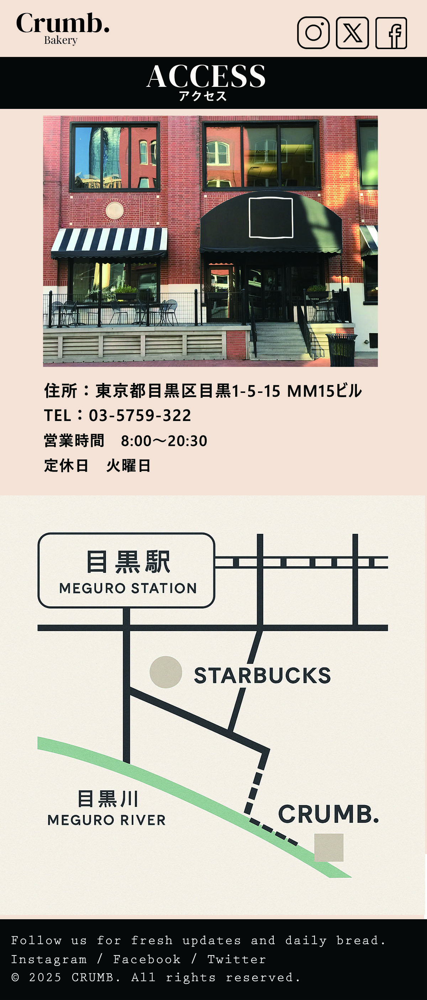
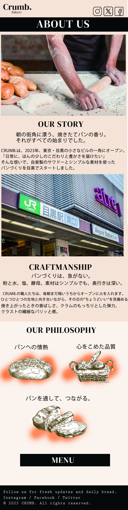

CRUMB. サイトコンセプト
ワイヤーフレーム作成

| CRUMB. トップページ ワイヤーフレーム作成時のこだわり | |
|---|---|
| ヒーロービジュアル |
ファーストビューに焼きたてパンの写真を大きく配置し、ブランドの印象を直感的に伝える。 短く力強いキャッチコピーを中央に配置し、余白を生かした高級感ある設計に。 |
| ナビゲーション |
英語表記でシンプルに構成（ABOUT / MENU / INFO / CONTACT）。 ロゴとの配置バランスに配慮し、視認性とブランド性を両立。 |
| 情報設計 |
「パンの魅力」→「店の紹介」→「サービス」→「アクセス」へと自然に流れる構成。 セクションごとにビジュアルとテキストのバランスを取り、視線誘導を意識。 |
| 配色とフォント |
チャコール×アイボリー×マスタードをベースに、落ち着きとあたたかみを演出。 タイトル・本文・ボタンに強弱をつけ、視認性とスタイリッシュさを両立。 |
| 写真の見せ方 |
パンは1点ずつ丁寧に配置し、余白で高級感を演出。 店内や素材の写真は“空気感”が伝わるよう「About」セクションで使用。 |
デザインカンプ作成



| CRUMB. サイト構成内容 | |
|---|---|
| コンセプト |
“Simple Bread, Crafted Right.” 都会の中で、丁寧に焼き上げられたパンと出会えるクラフトベーカリー。 シンプルだけど、素材と技術へのこだわりが光る。 日常に小さな特別感を添えるパンの世界観を、サイト上でも体験できるように表現。 |
| ターゲット |
・目黒〜中目黒周辺の20〜40代 ・クリエイティブ職、フリーランス、感度の高い都市生活者 ・パンとコーヒーを日常に取り入れている層 ・SNSで発信したくなるようなビジュアルとストーリーに反応する層 |
| サイトの目的 |
・店舗の認知度アップ（新規オープン／リブランディング） ・モーニングやランチサービスの訴求による来店促進 ・ブランドの世界観・クラフト感を視覚的に伝える ・営業時間・場所・商品情報の整理と提供 ・InstagramなどSNS導線によるファン獲得 |
| こだわりポイント |
・国産素材、無添加、手作りへの徹底したこだわり ・洗練されたビジュアル表現（構図／光／スタイリング） ・モダンでクラシックなタイポグラフィ（セリフ体＋英語ロゴ） ・英語と日本語を組み合わせたキャッチコピー設計 |
| 使用ツール |
・Adobe Photoshop ・Adobe Illustrator ・HTML / CSS / JavaScript ・Visual Studio Code |